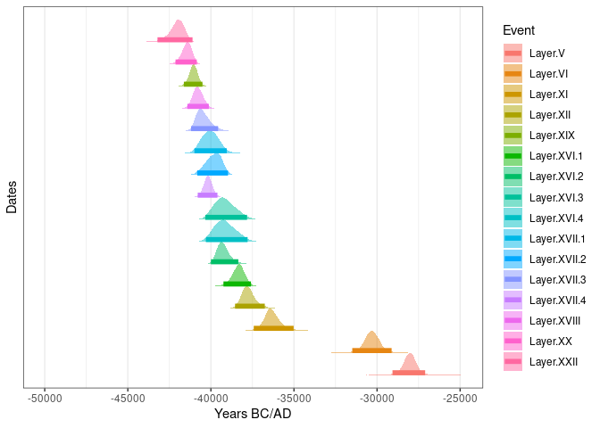
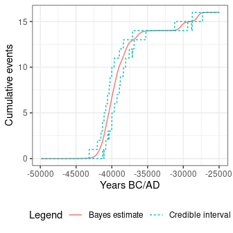
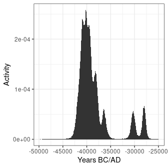
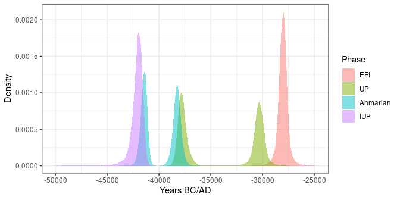
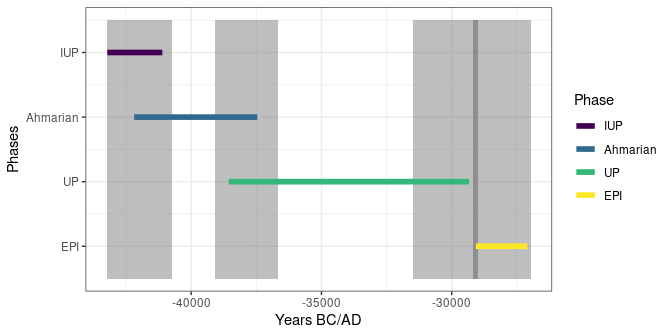

This repository contains a heavily modified fork of the ArchaeoPhases package. You might be interested in the original package.
Tools for the post-processing of the Markov Chain simulated by any software used for the construction of archeological chronologies.
ArchaeoPhases provides functions for the statistical analysis of archaeological dates and groups of dates. It is based on the post-processing of the Markov Chains whose stationary distribution is the posterior distribution of a series of dates. Such MCMC output can be simulated by different applications as for instance ChronoModel, Oxcal, or BCal.
To cite ArchaeoPhases in publications please use:
Philippe, Anne & Vibet, Marie-Anne (2020). Analysis of Archaeological Phases Using the R Package ArchaeoPhases. Journal of Statistical Software, Code Snippets, 93(1), 1-25. DOI 10.18637/jss.v093.c01.
You can install the released version of ArchaeoPhases from CRAN with:
install.packages("ArchaeoPhases")And the development version from GitHub with:
# install.packages("remotes")
remotes::install_github("ArchaeoStat/ArchaeoPhases")The only requirement is to have a CSV file containing a sample from the posterior distribution.
## Read output from ChronoModel
path_zip <- system.file("extdata/chronomodel.zip", package = "ArchaeoPhases")
path_csv <- utils::unzip(path_zip, exdir = tempdir())
chrono_events <- read_chronomodel(path_csv[[1]])
chrono_phases <- read_chronomodel(path_csv[[2]])ArchaeoPhases uses ggplot2 for plotting information. This makes it easy to customize diagrams (e.g. using themes and scales).

## Tempo plot
chrono_events %>%
tempo(level = 0.95) %>%
plot() +
ggplot2::theme_bw() +
ggplot2::theme(legend.position = "bottom")
## Activity plot
chrono_events %>%
activity() %>%
plot() +
ggplot2::theme_bw()
## Get phases
phases <- as_phases(chrono_phases)
names(phases) <- c("EPI", "UP", "Ahmarian", "IUP")
plot(phases) +
ggplot2::theme_bw()
## Set chronological order
set_order(phases) <- c("IUP", "Ahmarian", "UP", "EPI")
get_order(phases)
#> [1] IUP Ahmarian UP EPI
#> Levels: IUP < Ahmarian < UP < EPI